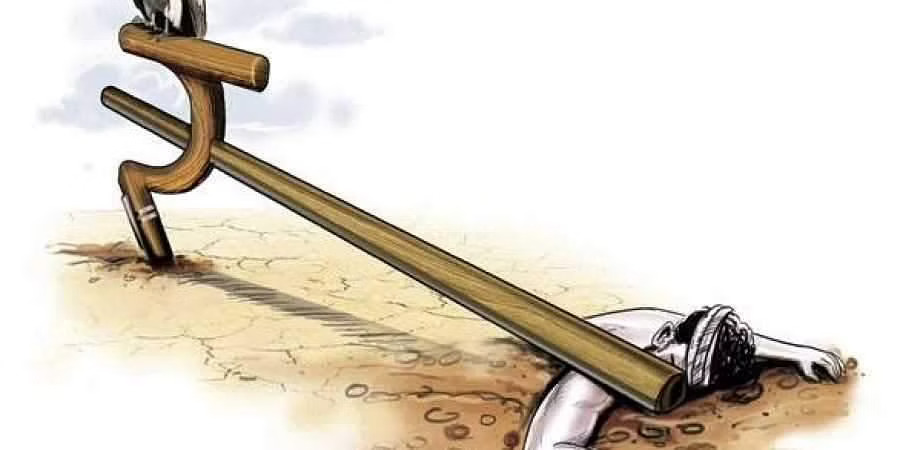
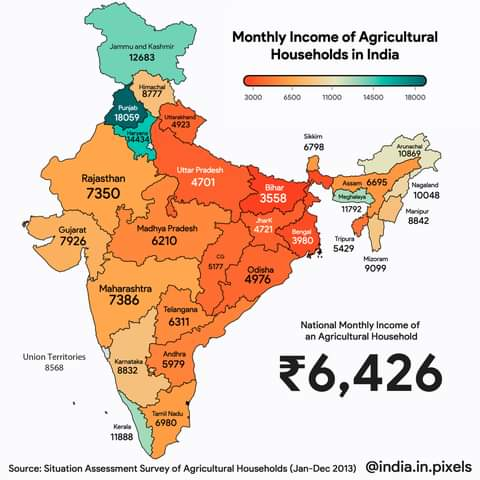

CASESTUDY
Reasons:
In order to solve a problem we should know the root cause of the problem.The National Crime Records Bureau of India reported that a total of 296,438 Indian farmers had committed suicide since 1995. Out of these, 60,750 farmer suicides were in the state of Maharashtra since 1995 and the remaining in Odisha, Telangana, Andhra Pradesh, Madhya Pradesh, Gujarat and Chhattisgarh, all states with loose financial and entry regulations.
Earlier, governments had reported varying figures, from 5,650 farmer suicides in 2014 to the highest number of farmer suicides in 2004 of 18,241. The farmer's suicide rate in India had ranged between 1.4 and 1.8 per 100,000 total population, over a 10-year period through 2005, however, the figures in 2017 and 2018 showed an average of more than 10 suicides daily or 5760 suicides per year. There are accusations of states manipulating the data on farmer suicides, hence the real figures could be even higher.
Various reasons have been offered to explain why farmers commit suicide in India, including floods, drought, debt, use of genetically modified seeds, public health, use of lower quantity pesticides due to less investments producing a decreased yield. There is no consensus on what the main causes might be but studies show suicide victims are motivated by more than one cause, on average three or more causes for committing suicide, the primary reason being the inability to repay loans. Panagariya, an economist at the World bank states, "farm-related reasons get cited only approximately 25 percent of the time as reasons for suicide" and "studies do consistently show greater debt burden and greater reliance on informal sources of credit" among farmers who commit suicide.
Economist Patel found that southern Indian states have ten times higher rates of suicides than some northern states. This difference, they say, is not because of misclassification of a person's death. The most common cause of suicide in South India is a combination of social issues, such as interpersonal and family problems, financial difficulties, and pre-existing mental illness. Suicidal ideation is as culturally accepted in south India as in some high-income countries. The high suicide rates in southern states of India may be because of social acceptance of suicide as a method to deal with difficulties. Suicide ideation among surviving family members of farmers' suicide victims is another worry. A recent study shows that almost a third of suicide survivors (family members left behind) had suicide ideation in one month prior to assessment.
| Reasons for farmers suicides.(in 2002) | Percent (of suicides) |
| Failure of crops | 16.84 |
| Other reasons (e.g. chit fund) | 15.04 |
| Family problems with spouse, others | 13.27 |
| Chronic illness | 9.73 |
| Marriage of daughters | 5.31 |
| Political affiliation | 4.42 |
| Property disputes | 2.65 |
| Debt burden | 2.65 |
| Price crash | 2.65 |
| Borrowing too much ( for house construction) | 2.65 |
| Losses in non-farm activities | 1.77 |
| Failure of bore well | 0.88 |
Studies dated 2004 through 2006, identified several causes for farmers suicide, such as insufficient or risky credit systems, the difficulty of farming semi-arid regions, poor agricultural income, absence of alternative income opportunities, a downturn in the urban economy which forced non-farmers into farming, and the absence of suitable counseling services.In 2004, in response to a request from the All India Biodynamic and Organic Farming Association, the Mumbai High Court required the Tata Institute to produce a report on farmer suicides in Maharashtra, and the institute submitted its report in March 2005. The survey cited "government's lack of interest, the absence of a safety net for farmers and lack of access to information related to agriculture, as the chief causes for the desperate condition of farmers in the state."
Measures taken for reduce suicides:
The government appointed a number of inquiries to look into the causes of farmers' suicide and farm-related distress in general. Krishak Ayog (National Farmer Commission) visited all suicide-prone farming regions of India, then in 2006 published three reports with its recommendations. Subsequently, former prime minister Manmohan Singh visited Vidarbha in 2006 and promised a package of ₹110 billion (about $2.4 billion). The families of farmers who had committed suicide were also offered an ex gratia grant of ₹100,000 (US$1,300) by the government, though this amount was changed several times.
2006 relief package
In 2006, the Government of India identified 31 districts in the four states of Andhra Pradesh, Maharashtra, Karnataka, and Kerala with a high relative incidence of farmer suicides. A special rehabilitation package was launched to mitigate the distress of these farmers. The package provided debt relief to farmers, improved supply of institutional credit, improved irrigation facilities, employed experts and social service personnel to provide farming support services, and introduced subsidiary income opportunities through horticulture, livestock, dairy, and fisheries. The Government of India also announced ex-gratia cash assistance from Prime Ministers National Relief Fund to the farmers. Additionally, among other things, the Government of India announced
- In the Vidarbha region of Maharashtra, which had received considerable mass media news coverage on farmer suicides, all farmer families of Vidarbha in six affected districts of Maharashtra were given a cash sum of ₹05 million (US$63,000) each, to help pay off the debt principal.
- ₹7.12 billion (US$89 million) in interest owed, as of 30 June 2006, was waived. The burden of payment was shared equally between the Central and the State government.
- The Government created a special credit vehicle for Vidarbha farmers, to the tune of ₹12.75 billion (US$160 million). Special teams comprising NABARD and banks were deputed to ensure fresh credit starts flowing to all farmers of the region.
- An allocation of ₹21.77 billion (US$270 million) was made to improve the irrigation infrastructure so that the farmers of the Vidarbha region had assured irrigation facilities in the future.
Agricultural debt waiver and debt relief scheme, 2008
The Government of India next implemented the Agricultural debt Waiver and Debt Relief Scheme in 2008 to benefit over 36 million farmers at a cost of ₹653 billion (US$8.2 billion). This spending was aimed at the writing part of the loan principal as well as the interest owed by the farmers. Direct agricultural loan by stressed farmers under the so-called Kisan Credit Card was also to be covered under this Scheme.
Regional initiatives
Various state governments in India have launched their own initiatives to help prevent farmer suicides. The government of Maharashtra set up a dedicated group to deal with farm distress in 2006 known as the Vasantrao Naik Sheti Swavlamban Mission, based in Amravati. A group to study the Farmers Suicides was also constituted by the Government of Karnataka under the chairmanship of Dr. Veeresh, former vice-chancellor of Agricultural University and Prof Deshpande as a member.
Effectiveness of government response:
Government has focused on credit and loan, rather than income, productivity, and farmer prosperity. Due to Anti Farmer laws, there is no scope for farmers to do the business or sell or lease farm or farm products. Assistance in paying off outstanding principal and interest helps the money lenders but has failed to create reliable and good sources of income for the farmer going forward. The usurious moneylenders continue to offer loans at interest rates between 24 and 50 percent, while the income-generating potential of the land the farmer works on has remained low and subject to weather conditions
Conclusion:
In the above picture you can see the monthly income of agricultural households in India . From analysing the the above provided data we can conclude that even though states like Maharastra ,Karnataka and Kerala having high montly income compared states like Bihar,Uttar pradesh,Jharkhand and West bengal, the rate of farmers comiting suicide is more in the regions.This clearly states that the problem of farmers is not only low income but also various reasons like high debt intrests,social problems and serious mental health.